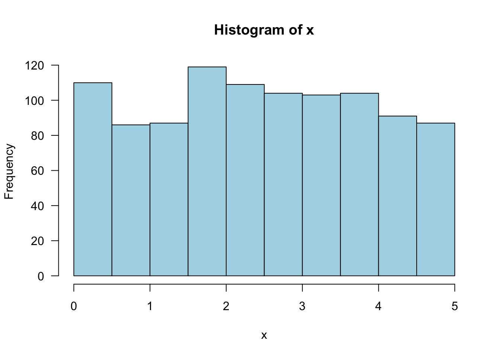

Ch. 3 Discrete Distributions
Sections covered: 3.1 - 3.5
3.3 Expected value
## [1] 1 2 3 4 5## [1] 0.10 0.15 0.20 0.25 0.30## [1] 0.1 0.3 0.6 1.0 1.5## [1] 3.53.3 Variance
## [1] -2.5 -1.5 -0.5 0.5 1.5## [1] 6.25 2.25 0.25 0.25 2.25## [1] 0.6250 0.3375 0.0500 0.0625 0.6750## [1] 1.753.3 Variance (alternative method)
## [1] 1 2 3 4 5## [1] 0.10 0.15 0.20 0.25 0.30## [1] 1 4 9 16 25## [1] 0.1 0.6 1.8 4.0 7.5## [1] 14## [1] 1.753.4 Binominal Theorem
p. 121 Using binomial tables for the cumulative distribution function (cdf) is optional; you may use R (see below) or www.stattrek.com instead.
For tests you will not need to calculate these values. You can leave your answers as summations, for example:
\(\Sigma_{x=0}^6 \left(\begin{array}{c}12\\ x\end{array}\right)(.3^x)(.7^{12-x})\)
R
Probability mass function (pmf)
\(P(X = x)\)
## [1] 56## [1] 0.123863Direct method
## [1] 0.123863Cumulative distribution function (cdf)
\(P(X \leq x)\)
Find \(P(2 \leq X \leq 4)\) given \(p = .7, n = 15\)
## [1] 0.0006717175(Using the pmf instead:)
## [1] 0.0006717175Graphing a binomial pmf:
ex. \(p = .7, n = 10\)
px <- dbinom(0:10, 10, .7)
# adding las = 1 turns the y-axis tick mark labels horizontal, which are easier to read
barplot(px, names.arg = 0:10, las = 1, col = "lightblue")
3.5 Hypergeometric
Note that the notation that R uses is different from the Devore textbook:
| parameter | Devore | R |
|---|---|---|
| total successes | M | m |
| total failures | N-M | n |
| sample size | n | k |
| successes in sample | x | x |
Example (p. 127)
Devore: h(x; n, M, N)
P(X = 2) = h(2; 10, 5, 25) –>
## [1] 0.38537553.6 Poisson
Example (p. 132)
p(3;2) =
## [1] 0.180447F(3;2) =
## [1] 0.8571235Practice Exercises
- (Binomial) Suppose the probability of a car accident involving a single vehicle is .7. If 15 accidents are randomly selected, what is the probability that between 2 and 4, inclusive, involve a single vehicle? (from slides)
## [1] 0.0006717175or
## [1] 0.0006717175(Binomial) A particular telephone number is used to receive both voice calls and fax messages. Suppose that 25% of the incoming calls involve fax messages, and consider a sample of 25 incoming calls. What is the probability that
At most 6 of the calls involve a fax message?
Exactly 6 of the calls involve a fax message?
At least 6 of the calls involve a fax message?
What is the expected number of calls among the 25 that involve a fax message?
What is the standard deviation of the number among the 25 calls that involve a fax message?
What is the probability that the number of calls among the 25 that involve a fax transmission exceeds the expected number by more than 2 standard deviations? (Textbook 50-51)
## [1] 0.5610981## [1] 0.1828195## [1] 0.6217215## [1] 0.9703301(Hypergeometric) A geologist has collected 8 specimens of basaltic rock and 12 specimens of granite. The geologist instructs a laboratory assistant to randomly select 15 of the specimens for analysis.
What is the probability that all specimens of one of the two types of rock are selected for analysis?
What is the probability that the number of granite specimens selected for analysis is within 1 standard deviation of its mean value? (Textbook 71)
## [1] 0.05469556mean_g <- 15*12/20
sd_g <- sqrt(20*(12/20)*(8/20))
pbinom(mean_g + sd_g, 15, 12/20)-pbinom(mean_g - sd_g, 15, 12/20)## [1] 0.8144507(Negative Binomial) The probability that a randomly selected box of a certain type of cereal has a particular prize is .2. Suppose you purchase box after box until you have obtained two of these prizes.
What is the probability that you purchase \(x\) boxes that do not have the desired prize?
What is the probability that you purchase four boxes?
What is the probability that you purchase at most four boxes?
How many boxes without the desired prize do you expect to purchase? How many boxes do you expect to purchase? (Textbook 75, homework)
Let x be the number of boxes without prizes to be purchased, \(p = {x+2-1\choose1}(.2^2)(.8 ^x)\)
## [1] 0.0768## [1] 0.1808## [1] 8(Poisson) Suppose that the number of drivers who travel between a particular origin and destination during a designated time period has a Poisson distribution with parameter \(\mu = 20\). What is the probability that the number of drivers will
Be at most 10?
Be 10?
Be within 2 standard deviations of the mean value?
(Textbook 81)
## [1] 0.01081172## [1] 0.005816307## [1] 0.005816307## [1] 0.9442797